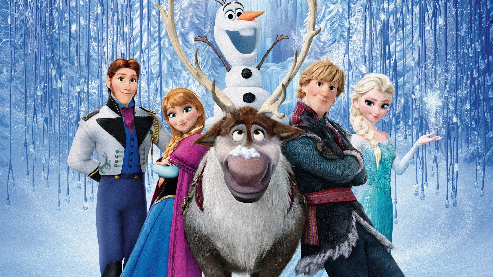
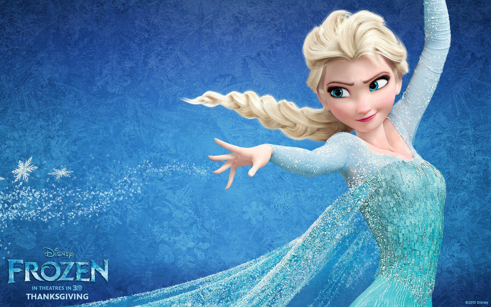
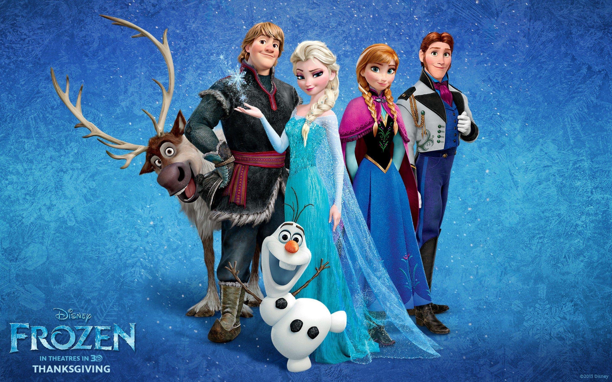

Princess Elsa of Arendelle possesses magical powers
that allow her to control and create ice and snow, often using them to play with
her younger sister, Anna. After Elsa accidentally injures Anna with her
magic, their parents, the King and Queen, take both siblings to a colony of trolls
led by Grand Pabbie. He heals Anna, but alters her memories so that she forgets about
Elsa's magic. Grand Pabbie warns Elsa that she must learn to control her powers, and
that fear will be her greatest enemy. The King and Queen isolate both sisters within
the castle, closing the castle gates to their subjects. In an effort to protect her
sister from her increasingly unpredictable powers, Elsa ceases all contact with Anna,
creating a rift between them. When the sisters are teenagers,
their parents are lost at sea during a storm.

Following her 21st birthday, Elsa is to be crowned queen of Arendelle.
She is afraid that the kingdom's citizens might find out about her powers and fear her.
The castle gates open to the public and visiting dignitaries for the first time in years.
Among them are the scheming Duke of Weselton and the dashing Prince Hans of the Southern
Isles, with whom Anna falls in love at first sight. Elsa's coronation takes place without
incident, but she still remains distant from Anna. Anna and Hans develop a romantic
connection during the coronation festivities, and he impulsively proposes to her,
but Elsa objects when they seek her blessing. Hurt and confused, Anna protests,
begging Elsa to explain her fear and isolation. The emotional strain causes Elsa
to accidentally unleash her powers before the court. Branded a monster by the Duke,
Elsa flees to the North Mountain, where she finally acknowledges her powers, building
a palace of ice in which to live a hermit life.
In the process, her magic unintentionally engulfs Arendelle in an eternal winter.

Anna ventures out to find Elsa and end the winter, leaving Hans in command.
She gets lost, collecting supplies at Wandering Oaken's shop.
She meets an iceman named Kristoff and his reindeer, Sven, convincing
them to take her to the mountains. An attack by wolves leads to Kristoff's
sleigh being destroyed. On foot, they meet Olaf, a cheerful snowman brought
to life unknowingly by Elsa, who offers to lead them to her. When Anna's horse
returns to Arendelle without her, Hans sets out to find Anna and Elsa,
accompanied by the Duke's minions, who have secret orders to kill Elsa.